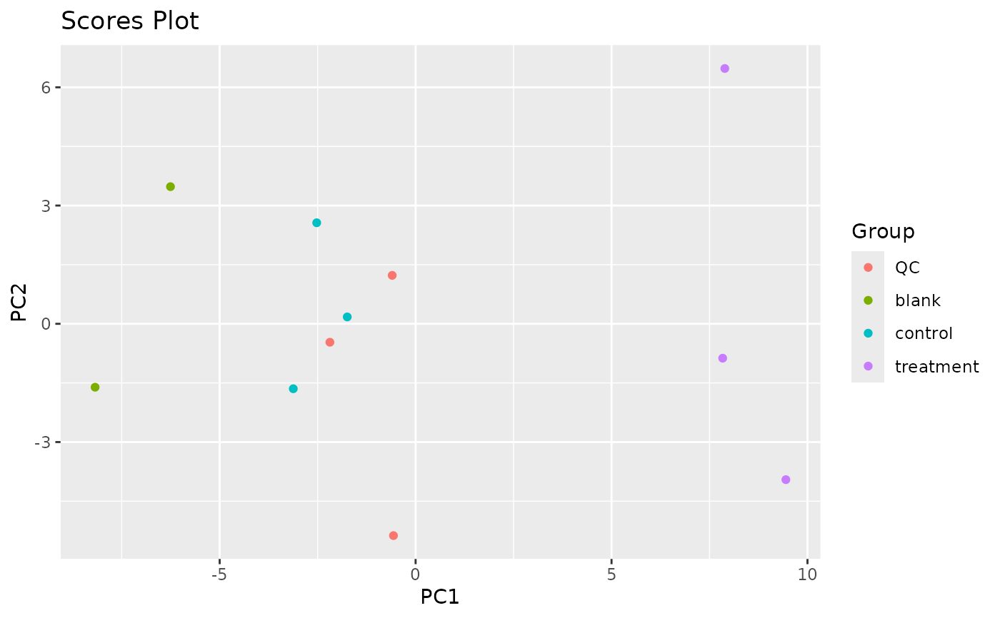
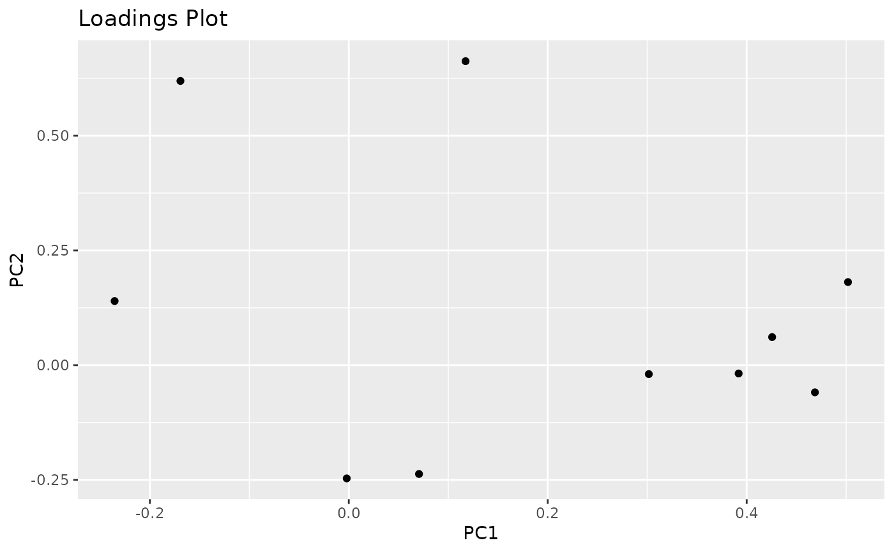

Draws a scores or loadings plot or performs calculations necessary to draw them manually
Source:R/plot.R
plot_pca.RdPerforms PCA and creates a Scores or Loadings plot. Basically a wrapper around pcaMethods::pca
The plot is drawn with ggplot2 and can therefore be easily manipulated afterwards (e.g., changing the theme or the axis labels).
Please note that the function is intended to be easy to use and beginner friendly and therefore offers limited ability to fine-tune certain parameters of the resulting plot.
If you wish to draw the plot yourself, you can set return_tbl = TRUE. In this case, a tibble is returned instead of a ggplot2 object which you can use to create a plot yourself.
Important Note
plot_pca() depends on the pcaMethods package from Bioconductor. If metamorphr was installed via install.packages(), dependencies from Bioconductor were not
automatically installed. When plot_pca() is called without the pcaMethods package installed, you should be asked if you want to install pak and pcaMethods.
If you want to use plot_pca() you have to install those. In case you run into trouble with the automatic installation, please install pcaMethods manually. See
pcaMethods – a Bioconductor package providing PCA methods for incomplete data for instructions on manual installation.
Usage
plot_pca(
data,
method = "svd",
what = "scores",
n_pcs = 2,
pcs = c(1, 2),
center = TRUE,
group_column = NULL,
name_column = NULL,
return_tbl = FALSE,
verbose = FALSE
)Arguments
- data
A tidy tibble created by
read_featuretable.- method
A character specifying one of the available methods ("svd", "nipals", "rnipals", "bpca", "ppca", "svdImpute", "robustPca", "nlpca", "llsImpute", "llsImputeAll"). If the default is used ("svd") an SVD PCA will be done, in case
datadoes not contain missing values, or a NIPALS PCA ifdatadoes contain missing values.- what
Specifies what should be returned. Either
"scores"or"loadings".- n_pcs
The number of PCs to calculate.
- pcs
A vector containing 2 integers that specifies the PCs to plot. Only relevant if
return_tbl = FALSE. The following condition applies:max(pcs) <= n_pcs.- center
Should
databe mean centered? Seeprepfor details.- group_column
Either
NULLor a column indata(e.g.,group_column = Group). If provided, the dots in the scores plot will be colored according to their group. Only relevant ifwhat = "scores".- name_column
Either
NULLor a column indata(e.g.,name_column = Feature). If provided, feature names are preserved in the resulting tibble. Only relevant ifwhat = "loadings"&return_tbl = TRUE.- return_tbl
A logical. If
FALSE, returns a ggplot2 object, ifTRUEreturns a tibble which can be used to draw the plot manually to have more control.- verbose
Should outputs from
pcabe printed to the console?
Examples
# Draw a Scores Plot
toy_metaboscape %>%
impute_lod() %>%
join_metadata(toy_metaboscape_metadata) %>%
plot_pca(what = "scores", group_column = Group)

# Draw a Loadings Plot
toy_metaboscape %>%
impute_lod() %>%
join_metadata(toy_metaboscape_metadata) %>%
plot_pca(what = "loadings", name_column = Feature)
